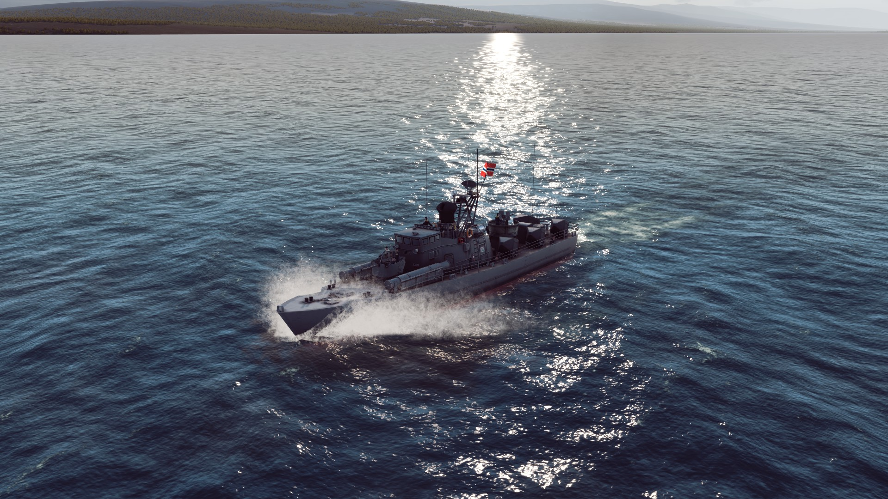

| Garcia |
US |
Frigate |
2,620 |
Wikipedia |
|
Built as ocean escorts for convoys and amphibious invasions, and heavily armed for
ASW, including an ASW helicopter. A few were sold to Brazil after being decommissioned. |
| Brooke |
3,420 |
Wikipedia |
|
Almost identical to the Garcia class, but swapped one of the 5"/38 guns for a
Mk 22 missile launcher with 16 missiles for better anti-air defense. |
| Knox |
4,100 |
Wikipedia |
|
Large class of frigates/ ocean escorts designed to escort convoys in lower-threat environments.
Carried only simple self-defense weaponry, but was relatively well-armed in ASW for such a small ship. Many
were sold to other navies at the end of their careers in the US Navy. |
| Oslo |
Norway |
2,130 |
Wikipedia |
|
Class of frigates built for the Norweigan navy based on earlier US destroyer
escorts.Were upgraded in the mid-1970's with a self-defense SAM system and more modern ASW
weapons. |
| Chengdu |
China |
1,700- 2,000 |
Wikipedia |
|
A subclass of the Type 053 frigate, called the Type 6601 or Type 01. Early versions
were assembled kits of the Soviet Riga-class frigate, with the torpedo tubes replaced with a twin
launcher for the SY-1 missile, itself a derivative of the Soviet SS-N-2 missile. After the
Sino- Soviet split, the ships were reverse-engineered and formed the basis for more Type 053 frigates. |
| Jiangdong |
1,700- 2,000 |
Wikipedia |
|
Two-ship derivative of the Type 053, called the Type 053K. Armed with two HQ-61 SAM
launchers, which are based on the US AIM-7 Sparrow missile. They weren't considered successful designs. |
| Jianghu I |
1,700- 2,000 |
Wikipedia |
 |
Called the Type 053H, it was a development of the Chengdu/ Type 01. Had two twin SY-1
launchers, 100 mm and 37 mm guns, and short-range ASW mortars. All the guns were manually operated
which made them obsolete in the face of modern missile, submarine, and air threats. |
| Jianghu II |
1,700- 2,000 |
Wikipedia |
 |
An improvement on the Jianghu I, with twin 100 mm guns instead of singles and improvements
to the sonar. Called the Type 053H1 to the Chinese. |
| Jianghu III |
1,700- 2,000 |
Wikipedia |
 |
The Jianghu III, or Type 053H2, was considered the first modern frigate for the PLAN,
with modern command and control systems, crew systems comparable to contemporary warships in other navies,
NBC (Nuclear-Biological-Chemical) protection systems. It also carried the YJ-8 missile, a modification of
the French Exocet missile, instead of the older missiles based on Soviet designs. |
| Grisha III |
USSR |
1,070 |
Wikipedia |
 |
Small ASW frigates/ corvettes that were more heavily defended against air and missile attack than the
Krivaks, despite being 1/3 their size. 86 were built to different types, with the Grisha III being the largest group
built. |
| Petya |
1,150 |
Wikipedia |
|
Small ASW frigates with simple armaments, usually 3-inch guns, ASW torpedoes, and
the RBU ASW rockets. Some were exported to other nations, and a few are still active. |
| Nanuchka |
Missile Boat |
660 |
Wikipedia |
|
Designed around an anti-ship missile system and a self-defense surface-to-air
system. Soviet ships had the SS-N-9, while exported versions had the SS-N-3. Modern versions
swapped the SS-N-9s for 16 SS-N-25 missiles in 4 quad launchers. |
| Tarantul |
560 |
Wikipedia |
|
Equipped with 4 SS-N-2 missiles and a CIWS system for self-defense. Over 80 were
produced, serving in over a dozen navies worldwide. |
| Osa I |
210 |
Wikipedia |
 |
One of the most numerous missile boat classes ever built, with over 400 produced.
Armed with 4 SS-N-2 anti-ship missiles and a twin 30mm gun mount for self-defense. Used in various
wars around the world, with a somewhat mixed combat record. While well-designed themselves, the
SS-N-2 was less than ideal for use against more modern ships with effective ECM and air defense. |
| Osa II |
245 |
Wikipedia |
 |
An improved version of the Osa I. Used the SS-N-2C missile, which had a longer range
and better hit probability. Like the Osa I, it saw widespread service and combat use around the world,
with dozens of other navies using either the Osa I or II. |
| Komar |
66 |
Wikipedia |
|
The first missile boat ever built, and the first warship to sink another ship using an
anti-ship missile. Armed with 2 SS-N-2 missiles in a twin launcher and a twin 25mm gun mount for
self-defense. Only 112 were built, as they were quickly superseded by the more capable Osa class. |
| Snogg |
Norway |
140 |
Wikipedia |
|
Carried 4 AGM-119 "Penguin" short-range anti-ship missiles, being IR guided (heat-seeking) unlike most
anti-ship missiles. Also carried 4 wire-guided torpedoes. |
| Hauk |
160 |
Wikipedia |
 |
A development of the Snogg class, with 6 Penguins but only two anti-ship torpedoes. |
| Tiger |
West Germany |
261 |
Wikipedia |
 |
Built in France for the West German Navy. They were armed with the French Exocet missile.
Most were sold to a few other navies after the end of their service in West Germany. |
| Sa'ar 1 |
Israel |
250 |
Wikipedia |
 |
Built in France for the Israeli Navy based on a German design after German shipbuilders
backed out of the contract. Initially only carried 40 mm guns and machine guns, along with American ASW
torpedoes. All the ships were upgraded with the Gabriel missile, becoming the Sa'ar 2 class. |
| Sa'ar 2 |
250 |
Wikipedia |
 |
Upgraded versions of the Sa'ar 1, with some of the 40 mm guns removed and replaced with
Israeli-built Gabriel anti-ship missiles, although it could also carry a mix of Gabriels and Harpoons.
The ASW torpedoes on the Sa'ar 1 were also removed. |
| Sa'ar 3 |
250 |
Wikipedia |
 |
Similar to the Sa'ar 2, with the ability to carry both Gabriel and Harpoon missiles,
but changed the gun armament from the 40 mm Bofors to a 76 mm OTO Melara. Took part in several wars,
building a good service record and sinking several Egyptian and Syrian missile boats. |
| Sa'ar 4 |
450 |
Wikipedia |
 |
An iterative design of the Sa'ar 3 class, with a similar weapons loadout but slightly
different sensors. Also saw service in the Yom Kippur War. Many of them were sold onto other navies after
being decommissioned from the Israeli Navy. |
| Aliya |
500 |
Wikipedia |
 |
A modified version of the Sa'ar 4, with less weapons but a helicopter hangar that allowed the
operation of two helicopters. |
| Hetz |
490 |
Wikipedia |
 |
Another modification (or subclass) of the Sa'ar 4, but instead of having a hangar, it had more
weapons fitted, including two harpoon missile launchers, 6 Gabriel missiles and a Phalanx CIWS for self-defense.
They also had more advanced sensors than the earlier Sa'ar 4 ships. |